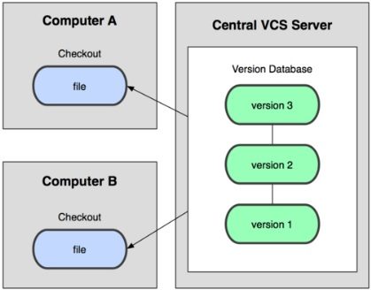

The MIT License (MIT)
Copyright (c) 2015
John Congote
Felipe Calad
Isabel Lozano
Juan Diego Perez
Joinner Ovalle
Permission is hereby granted, free of charge, to any person obtaining a copy of this software and associated documentation files (the "Software"), to deal in the Software without restriction, including without limitation the rights to use, copy, modify, merge, publish, distribute, sublicense, and/or sell copies of the Software, and to permit persons to whom the Software is furnished to do so, subject to the following conditions:
Es un sistema de control de versiones, o sea un sistema que registra los cambios realizados sobre el tiempo sobre un archivo o un conjunto de estos, permitiendo recuperar versiones específicas más adelante.
Existen 2 tipos de VCS:
Centralizados:
Distribuidos:

Git es un VCS distribuido.
Committed: Los datos están almacenados de manera segura en la base de datos local.
Modified: Hay modificaciones pero no están confirmadas en la base de datos.
Staged: Un archivo modificado esta marcado para ir en la próxima confirmación.
El directorio de Git: Es la parte donde se almacenan los metadatos y la base de datos de objetos del proyecto. Es lo que se copia al clonar un repositorio desde otro ordenador.
El directorio de trabajo: Es una copia de una versión del proyecto. Se saca de la base de datos comprimida en el directorio Git y se coloca en el disco para uso y modificación.
El área de preparación(índice): Es un archivo sencillo que contiene información a cerca de lo que va a ir en la próxima confirmación.
Fetch sirve para traer la última versión disponible en el servidor remoto.
Pull sirve para aplicarlos los cambios localmente.
Commit aplica los cambios que he realizado en el servidor local.
Push sirve para subir los cambios que he hecho al servidor remoto.
Para facilitar el trabajo y poderlo hacer de una manera más ágil se va a utilizar una interfaz gráfica para Git, llamada Source tree.
Con Source tree podemos realizar tareas como: